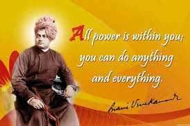
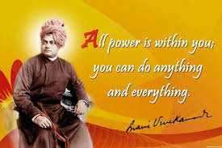
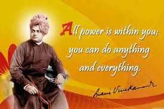

.jpeg) 

Swami Vivekananda was a great Indian spiritual leader and philosopher who played a significant role in the revival of Hinduism in India and in spreading Indian spiritual values to the Western world. Born as Narendranath Datta on January 12, 1863, in Kolkata, he was a brilliant student with a deep interest in religion and philosophy. He became a disciple of Sri Ramakrishna Paramahamsa, who taught him the unity of all religions and the path of spiritual realization. Swami Vivekananda is best known for his powerful speech at the Parliament of the World's 6+Religions in Chicago in 1893, where he introduced Hinduism to a global audience and emphasized the importance of religious tolerance and universal brotherhood. He later traveled widely across the United States and Europe, spreading the message of Vedanta and Yoga. In India, he founded the Ramakrishna Mission, which focused on spiritual development, social service, and education. Swami Vivekananda strongly believed in the potential of youth and encouraged self-confidence, service to humanity, and the pursuit of knowledge. He passed away on July 4, 1902, at the young age of 39, but his teachings continue to inspire people around the world. His birthday is celebrated as National Youth Day in India in recognition of his lasting impact on the nation's spirit and progress.

“Just one small positive thought in the morning can change your whole day.” — ...
“Opportunities don't happen, you create them.” — ...
“Love your family, work super hard, live your passion.” — ...
“It is never too late to be what you might have been.” —